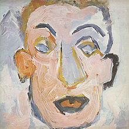

Self Portrait

Released: June 8, 1970
Length: 73:15
Producer: Bob Johnston
Label: Columbia
Side 1
- All the Tired Horses
- Alberta #1
- I Forgot More Than You'll Ever Know
- Days of 49
- Early Mornin' Rain
- In Search of Little Sadie
Side 2
- Let It Be Me
- Little Sadie
- Woogie Boogie (Instrumental)
- Belle Isle
- Living the Blues
- Like a Rolling Stone
Side 3
- Copper Kettle (The Pale Moonlight)
- Gotta Travel On
- Blue Moon
- The Boxer
- The Mighty Quinn (Quinn the Eskimo)
- Take Me As I Am (Or Let Me Go)
Side 4
- Take a Message to Mary
- It Hurts Me Too
- Minstrel Boy
- She Belongs to Me
- Wigwam (Instrumental)
- Alberta #2